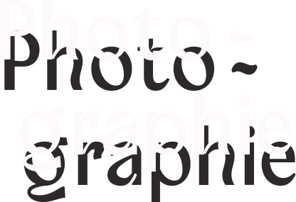
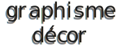

→ CV ← Ce portfolio que j’ai développé est un aperçu de mon univers artistique et professionnel.
Diplômée des Beaux-Arts de Montpellier, j’ai passé la majeure partie de ma carrière professionnelle en tant qu’artiste plasticienne et photographe. J’ai souvent travaillé en restauration, un choix qui m’a permis de financer mes projets artistiques.
Tout au long de mon parcours, j’ai été fascinée par le monde du virtuel, de l’immersif, et en particulier par la réalité virtuelle. Les possibilités infinies qu’offre le monde numérique m’ont attirée et j’ai décidé de faire une formation en développement web de 7 mois en 2023, voyant ce domaine comme une extension naturelle de ma passion pour l’art visuel.
Pour moi, l’apprentissage des langages informatiques était un pas indispensable pour intégrer le numérique à mes projets artistiques.

Aurélia Foucher
graphisme

La première partie de ce portfolio est une petite sélection (issue de différentes séries) de mon travail réalisé à la chambre photographique 5x7’’ ou au polaroïd.
J’expérimente la photographie argentique depuis 2015. Aujourd’hui, mes recherches s’articulent autour des multiples perceptions de la réalité et de la frontière entre le réel et le virtuel, notamment en prolongeant mon travail photographique graçe à l’IA. Dans la continuité de mes questionnements sur la perception, je travaille en ce moment à l’écriture d’un court-métrage que j’aimerais réaliser.
J’ai toujours évolué autour du milieu du cinéma pendant mes études notamment grâce à mes recontres avec des étudiant.e.s de l’ENSAV de Toulouse. J’ai participé à de nombreux courts-métrages et clips en tant que technicienne et j’ai beaucoup hésité à poursuivre des études dans ce domaine.
J’expérimente la photographie argentique depuis 2015. Aujourd’hui, mes recherches s’articulent autour des multiples perceptions de la réalité et de la frontière entre le réel et le virtuel, notamment en prolongeant mon travail photographique graçe à l’IA. Dans la continuité de mes questionnements sur la perception, je travaille en ce moment à l’écriture d’un court-métrage que j’aimerais réaliser.
J’ai toujours évolué autour du milieu du cinéma pendant mes études notamment grâce à mes recontres avec des étudiant.e.s de l’ENSAV de Toulouse. J’ai participé à de nombreux courts-métrages et clips en tant que technicienne et j’ai beaucoup hésité à poursuivre des études dans ce domaine.
Dans la partie Graphisme décor, j’ai voulu présenter quelques élements que j’ai pu réaliser pendant mon stage sur le long-métrage «La mer au loin» de Saïd Hamich fin 2023.
Cette première expérience en tant qu’assistante graphiste m’a vraiment enthousiasmée et stimulée, et c’est pour ça que j’ai suivi une formation infographiste quelques mois après, afin de me perfectionner dans la suite Adobe et viser le métier de graphiste de décoration de cinéma, en parallèle de mon activité artistique personnelle.
Enfin, dans la partie Graphisme j’ai ajouté des projets que j’ai pu réaliser : une affiche pour un documentaire, l'identité visuelle d'un bar, des affiches et un extrait de ce que j’ai fais pendant ma formation Infographiste : une fausse campagne de pub pour Haribo réalisée en partie en IA.
Cette première expérience en tant qu’assistante graphiste m’a vraiment enthousiasmée et stimulée, et c’est pour ça que j’ai suivi une formation infographiste quelques mois après, afin de me perfectionner dans la suite Adobe et viser le métier de graphiste de décoration de cinéma, en parallèle de mon activité artistique personnelle.
Enfin, dans la partie Graphisme j’ai ajouté des projets que j’ai pu réaliser : une affiche pour un documentaire, l'identité visuelle d'un bar, des affiches et un extrait de ce que j’ai fais pendant ma formation Infographiste : une fausse campagne de pub pour Haribo réalisée en partie en IA.